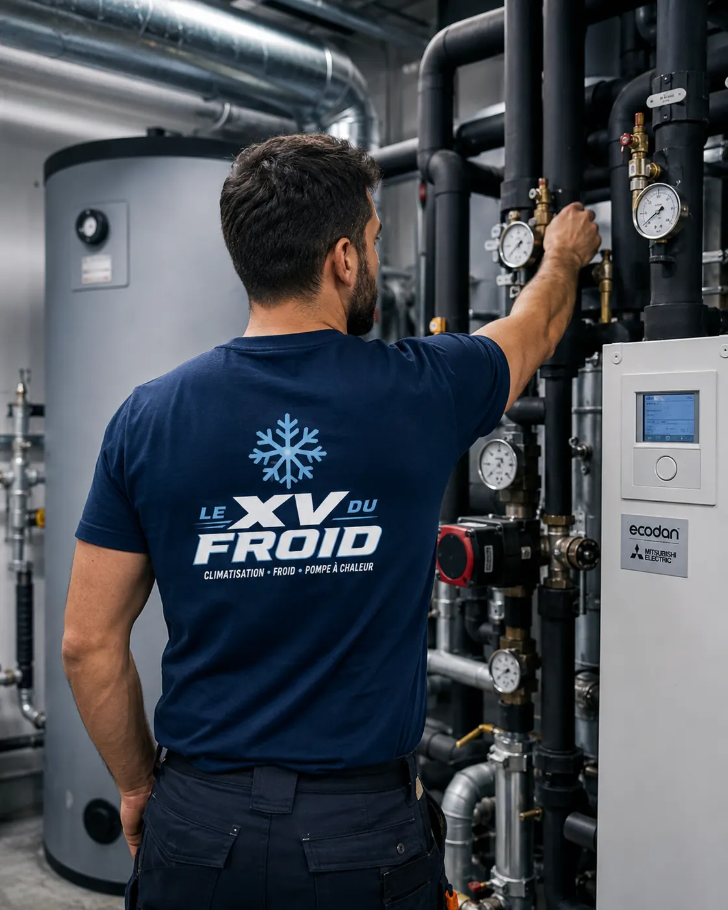

Entretien climatisation Houilles · 78800
Entretien climatisation à Houilles : filtres propres pour ceux qui éternuent
Rhinite, asthme, yeux qui piquent dès que la clim démarre : le coupable n’est pas l’air frais, mais ce que l’appareil a stocké et remet en circulation. Un entretien sérieux change beaucoup de choses, sans prétendre guérir quoi que ce soit.
- Filtres lavés ou remplacés
- Serpentin et bac nettoyés
- Conseils d’usage au quotidien

Le mécanisme
Un appareil qui brasse l’air de la pièce le filtre aussi, et le garde.
Une climatisation reprend l’air de la pièce, le refroidit et le renvoie. Au passage, le filtre retient poussières, poils, pollens. Quand il sature, l’air passe à côté ou à travers des dépôts anciens.
Le serpentin, humide, fixe à son tour des particules et peut héberger des moisissures s’il n’est pas nettoyé. Les premières minutes de fonctionnement envoient alors ces dépôts dans la pièce, d’où cette impression d’air « sale » au démarrage.
Je ne parlerai pas de traitement médical : si vous avez de l’asthme ou une allergie, votre médecin reste la référence. Côté appareil, voici ce qui aide réellement.
Les filtres
Un geste mensuel qui change l’air
Pendant la saison d’usage, sortez les filtres une fois par mois. Aspirez la poussière, puis passez-les sous l’eau tiède avec un peu de savon doux. Laissez-les sécher complètement à l’ombre avant de les remettre.
Un filtre déformé, cassé ou grisé en profondeur se remplace. Il en existe de plusieurs qualités, certains sont plus fins pour retenir les particules, au prix d’un débit d’air un peu réduit.
Évitez de remettre un filtre humide : il favorise les moisissures et sent vite mauvais.
À Houilles
Le logement près de la voie ferrée, la fenêtre ouverte l’été
Près d’un axe passant, la poussière entre vite : on aère, on referme, on met la clim. Les filtres s’encrassent alors plus vite que dans un logement calme, et il vaut mieux les regarder tous les mois.
Les animaux domestiques, les tapis et les rideaux ajoutent leur part. On le voit au gris du filtre au bout de quelques semaines seulement.
Gardez un second jeu de filtres si votre appareil le permet : l’un sèche pendant que l’autre sert.
Notre passage
Ce que nous faisons pour l’air intérieur
Au-delà des filtres, l’entretien porte sur les endroits où l’humidité et la poussière s’accumulent.
- Serpentin : nettoyé en place, rincé, essai de souffle après remontage.
- Turbine : brossée, car elle brasse l’air et retient des dépôts.
- Bac et évacuation : dégagés pour qu’aucune eau stagnante ne reste.
- Grilles et volets : essuyés, contrôlés.
- Conseils : fréquence de nettoyage adaptée au logement et aux occupants.

Entretien clim Houilles : ce qui se passe sur place
Le technicien dépose la façade, retire les filtres, nettoie le serpentin et la turbine. Il rince, laisse égoutter, vérifie qu’aucune eau ne stagne.
Après remontage, il met l’appareil en route, écoute le souffle et sent l’air. Un appareil propre ne dégage aucune odeur après quelques minutes de marche.
- Filtres et turbine nettoyés
- Eau stagnante supprimée
- Essai de souffle et d’odeur
Au quotidien
Quelques habitudes qui aident entre deux passages
Laissez tourner le ventilateur seul quelques minutes après l’arrêt du froid, si votre appareil propose ce mode : il sèche le serpentin. Évitez de viser la consigne la plus basse, qui multiplie les cycles et l’humidité.
Aérez la pièce régulièrement, même climatisée, pour renouveler l’air. Le nettoyage climatisation Houilles dépend aussi de l’usage : plus l’appareil sert, plus il demande de soin.
Un compte rendu écrit vous est remis après chaque visite.
Questions
Entretien de climatisation à Houilles et qualité de l’air : vos questions
La clim peut-elle déclencher des allergies ?
Un appareil mal entretenu peut remettre en circulation des particules stockées. Un entretien régulier limite ce phénomène, mais consultez votre médecin pour tout symptôme.
À quelle fréquence nettoyer les filtres ?
Chaque mois pendant l’usage, davantage si vous avez des animaux ou si le logement est poussiéreux.
Où demander un entretien climatisation Houilles ?
Contactez-nous avec la marque et le nombre d’unités. Nous proposons un créneau et vous remettons un compte rendu écrit.
Un purificateur d’air remplace-t-il l’entretien ?
Non. Il traite l’air de la pièce, pas l’intérieur de l’unité. Les deux ne font pas le même travail.
L’odeur de moisi vient-elle toujours du serpentin ?
Souvent, parfois du bac ou de l’évacuation. On cherche l’origine avant de nettoyer.
Peut-on utiliser un spray désinfectant ?
Mieux vaut éviter les produits ménagers qui abîment les ailettes ou l’électronique. Nous utilisons un produit adapté.
Dans votre ville
Les autres services à Houilles
Un besoin différent, une page différente : dépannage, entretien, installation ou urgence.
- Climatisation Houilles : pose de clim réversible
- Dépannage climatisation Houilles : locataire, qui paie et que dire au propriétaire
- Urgence climatisation Houilles : cabinet médical, pharmacie, laboratoire en panne de froid
- Climatisation dans les Yvelines (78) : installation, dépannage, entretien, urgence
Autour de chez vous
Entretien de climatisation dans les villes voisines
Si vous êtes à la limite de deux communes, lisez aussi la page d’à côté.
- Entretien climatisation Montesson : un appareil propre consomme moins
- Entretien climatisation Sartrouville : échangeur, bac à condensats et nettoyage
- Entretien climatisation Carrières-sur-Seine : le groupe extérieur, l’humidité, la mousse et les feuilles
- Entretien climatisation Maisons-Laffitte : remise en route d’une résidence secondaire
- Entretien climatisation Andrésy : nettoyer ses filtres soi-même, chaque mois
- Entretien climatisation Chatou : le faire en mai plutôt qu’en août
- Climatisation Conflans-Sainte-Honorine : entretien et nettoyage
- Entretien climatisation Croissy-sur-Seine : climatiseur mobile et monobloc
- Entretien climatisation Le Vésinet : garder la garantie constructeur
À côté
D’autres besoins dans les communes voisines
Chaque ville a ses pages.
Nos services
Aller plus loin sur la climatisation
Les pages du site qui complètent celle-ci : services, guides pratiques et devis.
- Dépannage climatisation en Île-de-France
- Installation de climatisation : split, gainable, monobloc
- Entretien de climatisation et de clim réversible
- Demander un devis climatisation gratuit
- Toutes nos zones d’intervention
- Fuite d’eau d’un climatiseur : causes et solutions
- L’entretien de la climatisation est-il obligatoire ?
Où on intervient
Houilles et alentours
Le centre, les abords de la gare et les quartiers pavillonnaires, ainsi que Carrières-sur-Seine, Sartrouville, Montesson et Chatou.
Demander un entretienÀ lire aussi
Autour de Houilles
Pages voisines : climatisation Sartrouville, climatisation Montesson, climatisation Chatou.
Transparence
Un devis clair avant toute intervention.
Vous savez ce qui est prévu, pourquoi c’est nécessaire et à quel tarif avant que le technicien commence. Puis contrôles et essais avant son départ.